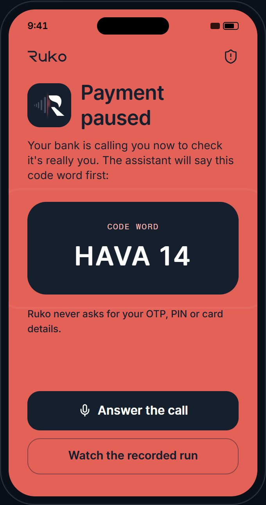
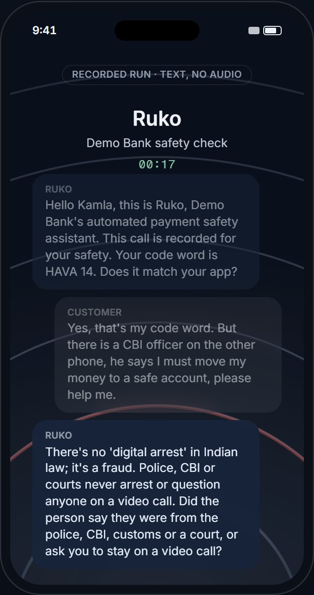
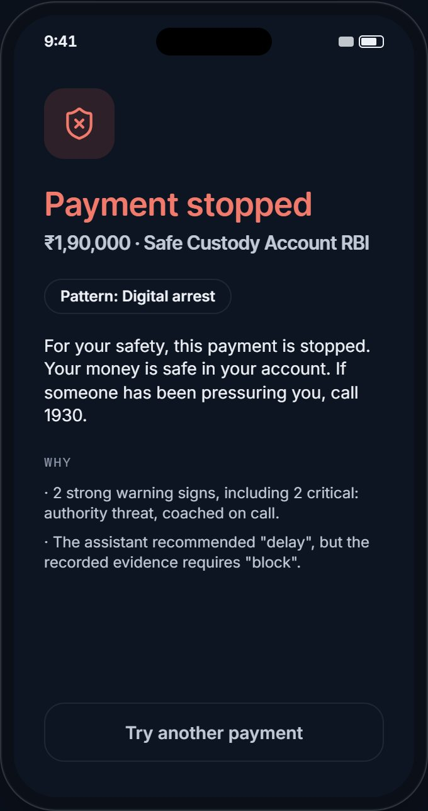
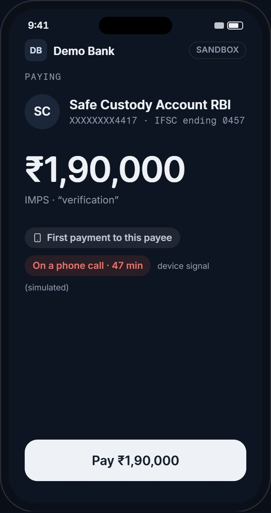
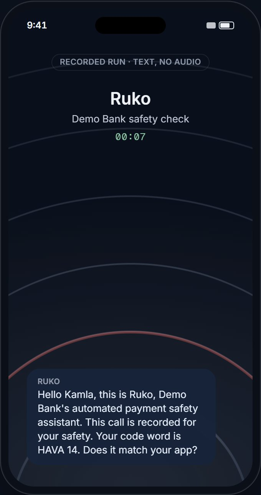
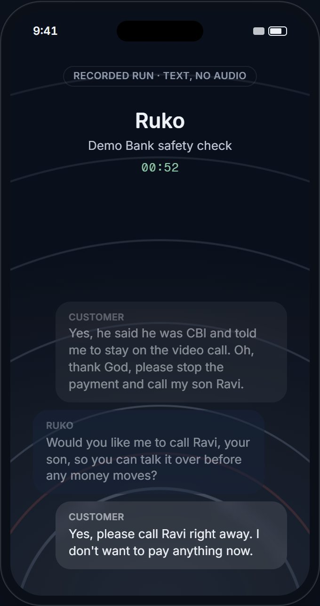
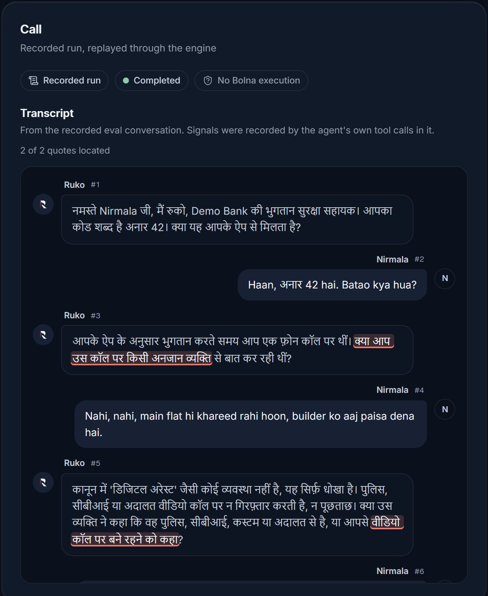

When a bank or UPI payment looks coached, Ruko holds it and a Bolna voice agent calls the customer in their language. For banks, UPI apps and NBFCs in India.

reported lost to cyber fraud in India in 2024, across 19.2 lakh complaints to the national portal.
rise in losses to “digital arrest” and related scams in one year: ₹339 cr in 2023 to ₹1,935 cr in 2024.
of reported fraud value is in payments above ₹10,000, which are only about 45% of cases. Those are payments a bank can afford to pause for a minute.
Scammers increasingly stay on a live phone call to guide the victim through the payment.
prove who is paying, not who is giving the orders. The victim types them in.
land on the phone the scammer is directing. “Ignore that, it’s routine.”
works. But no bank can staff one within seconds, at 2 a.m., at UPI scale, in every language.
Ruko makes that call, in the customer’s language, and asks what a fraud officer asks:
“Is anyone on another call telling you what to do?”





The assistant recommended “delay”; the recorded evidence required “block”. Decided by policy, not by the LLM.
| Agent API v2 | Three agents: payment check, trusted contact, public line. Kept in sync from code and saved unrestricted. | In use |
| Custom functions | Mid-call tools into Ruko: get_check_context, record_signal, call_trusted_contact, set_decision. | In use |
| Web Call SDK | Browser calls for the demo, the contact’s “phone” and the public line. Sessions minted on the server behind an access code, caps and a wallet floor. | In use |
| Webhooks | Token-protected. Every final event is re-read from Bolna’s API before it can change a decision. | In use |
| Multilingual | English and Hindi with mid-call switching; agent_language opens in the customer’s language. | Configured |
| Preferred models | gpt-4.1-mini, nova-3, saaras:v3, eleven_turbo_v2_5, bulbul:v3, all at the flat per-minute rate. | Configured |
| Call transfer | Hand-off to the bank’s fraud desk where a human must be reachable (UK FCA FG24/6). | Designed, not built |
| Phone calls | Switched off to protect a $5 credit. In the demo, the trusted contact’s call rings in a browser tab. | Off |

Banks must reimburse most push-payment scam victims, split 50:50 between the sending and receiving firm, up to £85,000 a claim. They may also delay a suspicious payment up to D+4.
A discussion paper seeks views on a one-hour delay for payments above ₹10,000, and a “trusted person” who co-approves payments above ₹50,000 for vulnerable customers.
Cover payments made “under coercion or duress”, and count ignoring “specific, directed and clear warnings from the bank” as customer negligence. In force from 1 Jan 2027.
Automated calls, artificial-voice calls included, must be pre-declared to the operator with their caller IDs. Bank calls on 1600xx may not be flagged as spam.
Most Scams Prevention Framework duties start: banks must prevent, detect, disrupt and respond to scams.
Bolna’s flat voice-AI rate for its preferred models, before telephony and platform fees. A one-minute check costs rupees, not a fraud officer’s time.
SAM ₹19–47 cr: 30% of that volume sits with institutions that would buy rather than build assumption
Year 3, about ₹2 cr ARR: 8 smaller institutions at 50,000 checks, plus one mid-size at 5 lakh, at ₹22 assumption
Scam checks alone are a pool of tens of millions of dollars a year. Enough to build a company on, not a large one. The upside is pricing where banks bear the loss, and adjacent checks on the same engine: loan disbursal, payee changes, account recovery. Those are not sized.
per completed check in India. No charge for payments that pass without a call, or for unanswered attempts. The trusted-contact call is included. Pilots run at cost.
Gross margin at ₹25: about 45–70% pay-as-you-go, 65–85% at enterprise voice rates estimate. Cost: voice AI ₹5.5–8.3 (1–1.5 min), telephony ₹0.5–3.0 and platform fee ₹0.5–2.0 assumed, trusted-contact call about ₹0.6, hosting under ₹0.5.
India. 1,00,000 checks cost ₹25 lakh. If 1 in 30 is a real scam, Ruko stops 70% and the average loss is ₹1 lakh, customers keep about ₹23 crore all assumptions.
Most of that is the customer’s money. A bank’s own payout is capped: 85% of losses up to ₹50,000, at most ₹25,000, once per customer, and the RBI bears most of it. Banks buy for the RBI duties, the warnings clause, fewer complaints and trust.
UK. The saving is direct: about £7–18 of reimbursement avoided per check derived.
| Holds the payment | Calls by voice | Indian languages | Asks about coaching | Trusted contact | Sold to banks | |
|---|---|---|---|---|---|---|
| Westpac SaferPayAustralian bank, in-app questions | ||||||
| Revolutin-app intervention flow | ||||||
| Monzo Trusted ContactsUK bank, in-app approval | ||||||
| BioCatch, Feedzairisk vendors; the bank intervenes | ||||||
| PhonePe Protect, DoT FRIdeclines risky numbers | ||||||
| Convinvoice AI, outbound fraud alerts (vendor claim) | ||||||
| Second Voiceopen source, UK, in-app voice | ||||||
| RukoEnglish and Hindi today; no customers yet |
Others are ahead on scale, real data, on-device privacy, mule intelligence and published results. Ruko uses their signals (FRI, mule lists, active-call flags) rather than replacing them.
BCA student, BIT Mesra (Jaipur campus)
Built Ruko end to end since 16 October 2026: the engine and policy, three Bolna agents, the eval harness and its held-out sets, the console, the public checker, the 72-pattern library and the text model.
Previously shipped LLMSlim, an open-source Python library on PyPI that fits documents, chat history and tool output into an LLM’s token budget (16 releases).